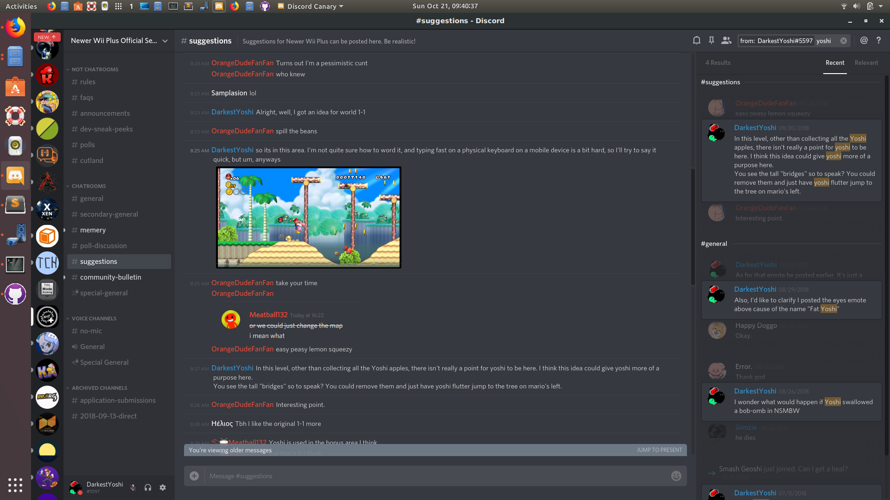
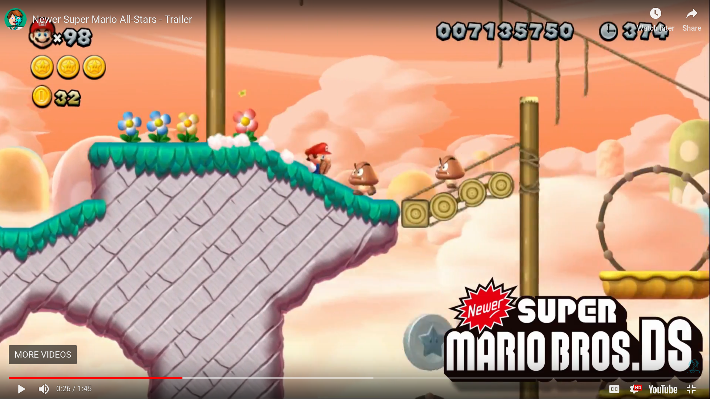
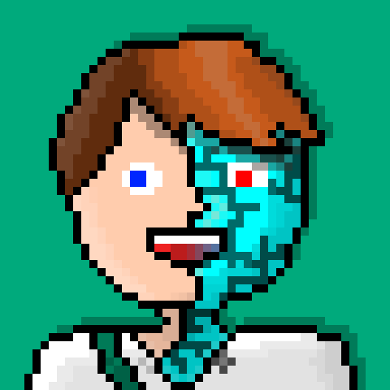

Right, I already gave my suggestions on the discord server, but I'll repeat it here for those who didn't see. Koopa did already say that they won't implement them but I still think it's note worthy.
I made this comment a while back on the Newer Plus Discord Server which I think could apply here as well

(Click the image to see the content full screen)
Now we get to the Newer DS section, and honestly, I don't really like it.

I don't really like how you zoomed in the camera. I get that you were trying to replicate the Newer DS camera, but that was only added because of necessity. I think you should zoom out the camera
I also dislike the wood in that screen shot. It does not fit in at all.
Now, onto the positives:
This hack looks to be really cool. 80+ levels from the best NSMB hacks? I'm sold.
As A Kramer Randomness said, this is a really cool Christmas gift.
Most tilesets look great.
I think I'll do a review of this mod once it releases. I can't wait

Since: 09-17-17
From: Middelburg, the Netherlands |
 Newer Super Mario All-Stars is a fan-mod of New Super Mario Bros U created by Rimea and Sierra. This mod aims to re-create over 80 of the best stages from all the Newer Mods created for Wii and DS over the past 8+ years This means that this mod will feature: -80+ new stages! -Music from all newer mods! -Nearly 200 tilesets to re-create the Newer look! -Returning features from the Newer games! -Retextured enemies, objects and worldmaps! To learn more head on over to the Evolution Discord server: https://discord.gg/K6ZTn4m Here you can ask the creators questions, suggest things yourself, and get updated on the progress of the hack. This mod will be released on December 25th, and we hope you'll give it a shot! |
|
Posted on 10-21-18, 05:49 pm
(rev. 1 by
 Buntendo on 10-21-18, 05:56 pm) Buntendo on 10-21-18, 05:56 pm) |
| WillyMaker |
Posted on 10-21-18, 05:50 pm, deleted by
#5352
 WillyMaker WillyMaker |
Since: 07-12-18
|
This Will Be A Nice Christmas Gift! |
|
Posted on 10-21-18, 07:30 pm
|

Since: 05-17-17
From: Mushroom Kingdom |
Old 3DS XL info:
I used to have a 3DSafe A9LH V11.3.0-36U with Luma in my CTRNAND. Since ReiNAND Reibooted and Re-Reileased, I "switch"ed back. Right now, I have boot9strap with Luma 8.0 as my CFW. Though, I'd like to see other CFW's for B9S. |
|
Posted on 10-21-18, 07:38 pm
|
{kind=link}